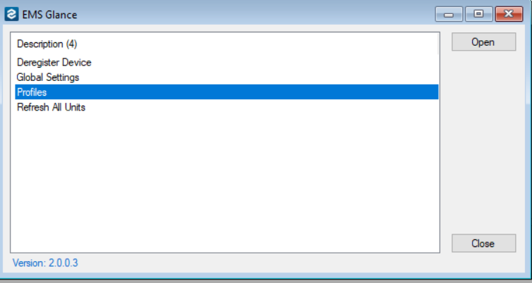
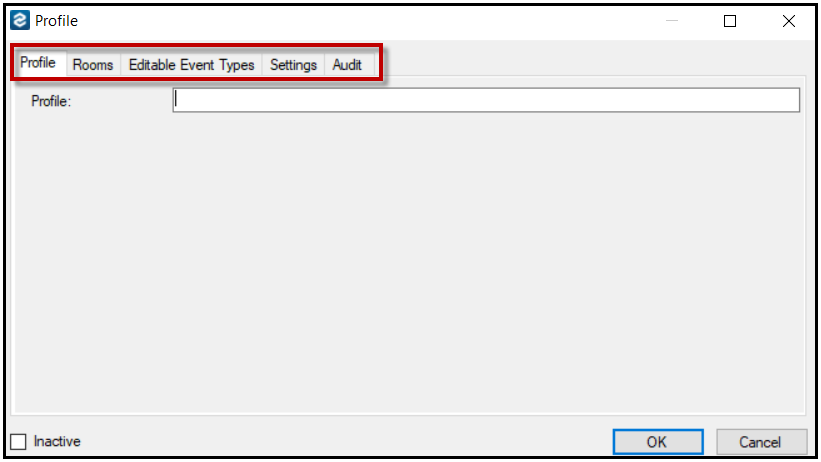
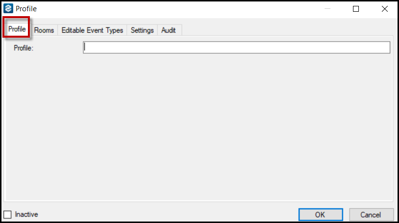
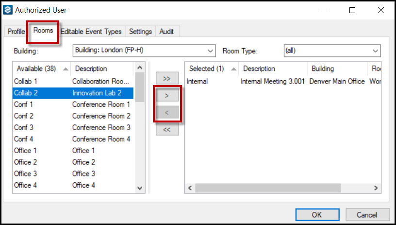
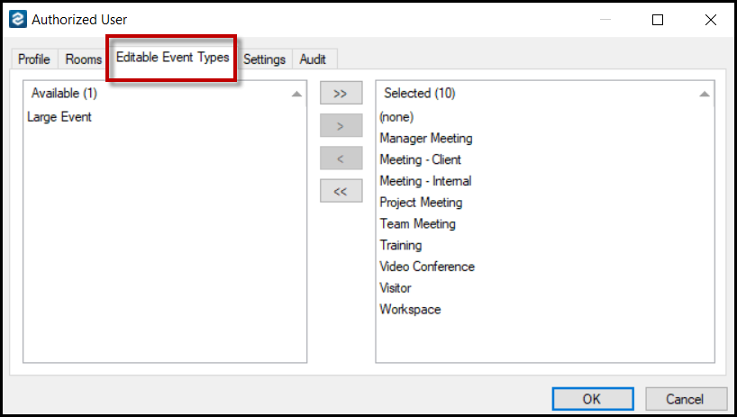
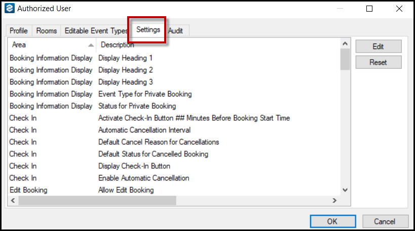

Configure Profiles in
In the (formerly named EMS Glance), you can customize how information displays at the Global level (the default for all Profiles) for just one Profile.
This topic outlines how to:
-
Access Display Settings for Just One Profile
-
Name Your Profile
-
Add or Delete a Room from Your Profile
-
Add an Event to Your Profile
-
Configure a Setting for the Profile
- Secondary Authentication
Access Display Settings for Just One Profile
- On the toolbar, click EMS Glance Settings to access the Settings area.
NOTE: By default, all settings for the profile are initially defined by the global settings; however, you can override these settings for a profile. You can also reset all the settings to their default values.
- Then select Profiles, then click Open.

- This window lists all the defined profiles by name.
Profiles Window

- Click New to create a new Profile. The Profiles window opens displaying multiple configuration tabs: Profile (the tab that opens by default), Rooms, Editable Event Types, Settings, and Audit tabs.

Name Your Profile
- Navigate to the Profile dialog box > Profile tab.
- Name your profile from the Profile tab.
Profile Tab

Add or Delete a Room from Your Profile
- Navigate to Profile dialog box > Rooms tab. The Rooms tab displays all the rooms that can be added to the profile (the Available list) as well as all the rooms that are currently selected for the profile.
- Add or delete rooms for a profile on this tab by selecting the room to be added or deleted and clicking the Move (<, >) buttons.
Rooms Tab

Add an Event to Your Profile
- Navigate to Profile dialog box > Editable Event Types tab.
- The Editable Event Types tab displays all the event types that can be added to the profile (the Available list) as well as all the event types that are currently selected for the profile. This tab controls which bookings (via event types) are editable in the .
Editable Event Types Tab

Configure a Setting for the Profile
- Navigate to Profile dialog box > Settings tab.
- The Settings tab displays the configuration setting for the profile.
NOTE: By default, all settings for the profile are initially defined by the global settings; however, you can override these settings for a profile. You can also reset all the settings to their default values.
Settings Tab

Secondary Authentication
Users can quickly authenticate in the EMS Room Sign App with their work badge. However, for users without a badge, secondary authentication is necessary. You can configure a Forgot my Badge button that allows for this secondary authentication. See Also: Authentication.